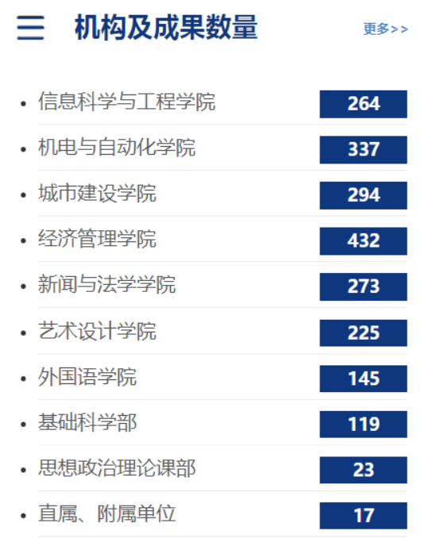
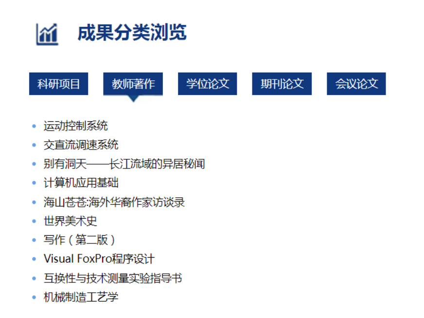
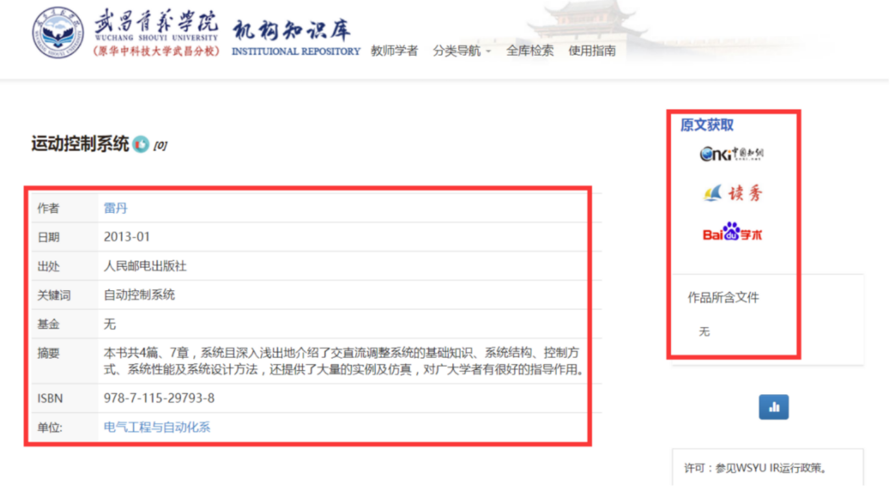

用户使用手册
（试行）
图书馆
目 录
1 系统简介
武昌首义学院机构知识库作为支撑学术研究的基础设施，旨在提高学术资源的可见度和展示度，促进学术资源的共享和利用。该库收集并保存我的大学教师和科研人员的学术与智力成果；为我的大学教师，科研人员和学生的学术研究和学术交流提供系列服务, 包括存档，管理，发布，检索和开放共享。
1.1系统界面
该系统首页面提供本库简介、最近收录、学者推荐、机构及成果数量、成果分类浏览、被收录情况等栏目信息。菜单栏提供教师学者、分类导航、全库检索、使用指南。见图1-1。

1.2 最近收录
该界面提供按导入日期排序的最新四条收录信息，见图1-2。
1.3 学者推荐
按照成果总数量多少，显示前九位机构知识库中的学者，同时提供学者大师、学科带头人、骨干教师、骨干教师培养对象聚类的分类浏览。点击某位学者后显示与学者相关的信息和成果列表。见图1-3。
1.4 院系导航
在主页上显示了机构知识库中九个教学单位和校直属、附属单位成果数量，点击可以查看各单位介绍和相关下属单位，见图1-4。

1.5 成果分类浏览
该界面显示科研项目、教师著作、学位论文、期刊论文、会议论文等分别被点击次数最多的10条成果，点击“更多”查看该类型收录的全部成果列表，见图1-5。点击标题，可以查看成果的详细信息，右侧提供原文获取途径（中国知网、读秀和百度学术），见图1-6。


图1-6
1.6 被收录情况
在主页上显示我校机构知识库相关知识成果被SCI、SCI-E、EI、CPCI-S、CPCI-SSH、CSCD收录信息，见图1-7。选择进入成果可查看对应的详细信息。
2 教师学者
进入该页面，可展示我校所有收录的学者信息，提供按院系单位的浏览，同时还提供“学者大师”、“学科带头人”、“骨干教师”、“骨干教师培养对象”的分类查看，您还可以直接键入学者进行搜索查看。见图2-1。

图2-1
2.1 学者详细页面
学者详细信息页面展示学者单位、职称、研究领域、邮箱、个人主页、合作者等个人信息以及机构知识库中与学者相关的所有成果信息，见图2-2。

3 分类导航
“分类导航”提供按院系单位、发表日期、作者、标题、关键词五种分类，以下分别进行描述。
3.1 院系单位
按院系单位浏览，显示各单位介绍以及单位下所包含的学术成果数量。见图3-1。

3.2 发表日期
系统默认是按照发表日期的升序来排序，用户也可选择按照标题/提交日期/发表日期的升序或者降序方式来排序。此外，用户还可选择特定的出版时间（包括年份和月份）或输入年份，以此快速检索某一时间段内出版的条目，见图3-2。

3.3 作者
用户可以按照作者姓名的字母顺序升序或降序进行浏览。见图3-3。

3.4 标题
用户按照所有成果的标题字母顺序进行浏览，可选择按照标题/日期/提交日期的升、降序方式来排序,见图3-4。

3.5 关键词
用户可以按照所有成果关键词的字母顺序升降序进行浏览，也可“输入前几个文字”来快速搜寻条目，见图3-5。

4 全库检索
页面提供综合检索框，可输入成果标题或者学者姓名进行检索。左侧的“结果过滤”提供按作者、关键词、成果发表、发表日期、收录数据库、ISSN、文献类型、语言的分组浏览，见图4-1。

图4-1
5 使用指南
提供本系统的介绍和可供下载的文档，见图5-1。

图5-1